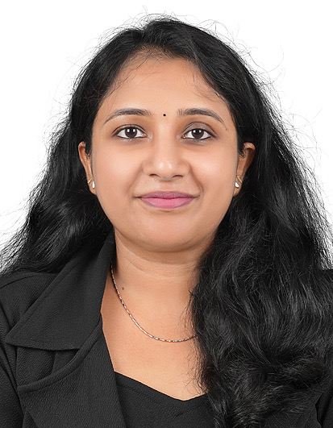

General Manager · Silver Hills Holiday Homes
Overall resort operations, administration, human resource management, guest relations, budgeting and strategic planning.
Academician | Researcher | Author
Commerce academic with experience in higher education, research and organisational management. Interested in contributing to teaching, research and the wider academic community.

Dr. Alagra Antony holds a Ph.D. in Commerce from Bharathidasan University. Her academic experience includes teaching in autonomous higher education institutions in Kerala, supported by professional experience in banking operations and management.
Her doctoral research examined the effect of social intelligence on job performance among college teachers in the Commerce stream in Kerala. Her broader academic interests include commerce, management, organisational behaviour, social intelligence and higher education.
St. Joseph’s College (Autonomous), Tiruchirappalli · Bharathidasan University · 2026
Stella Maris College, Chennai · University of Madras · 2015
Christ College, Irinjalakuda · University of Calicut · 2013
Bharathidasan University · Pursuing · Expected completion: March 2027
Overall resort operations, administration, human resource management, guest relations, budgeting and strategic planning.
Teaching in higher education.
Teaching in higher education.
Data analysis, operational control monitoring, compliance management, reporting, data validation and process improvement.
Doctoral thesis: “A Study on the Effect of Social Intelligence on Job Performance among College Teachers in Commerce Stream, Kerala.” The study used a descriptive and analytical approach and a sample of 650 college teachers across four state universities in Kerala.
Social intelligence, job performance, organisational behaviour, job satisfaction, organisational citizenship behaviour and teaching effectiveness.
Quantitative research, questionnaire-based data collection, Confirmatory Factor Analysis and Covariance-Based Structural Equation Modelling.
Faculty development programmes and training in AI-enabled teaching, research methodology, publication practices and pedagogy.
The following publication titles are transcribed from the CV provided. Indexing/status labels reflect the CV and should be checked against the current journal records before formal use.
Additional article details, DOI links, issue information and indexing status can be added as verified records become available. A 2024 article on social intelligence and professional efficacy is available here.
Educreation Publications · ISBN 978-1-5457-2377-7
Mayas Publication · ISBN 978-81-941560-0-0
Financial Transaction Authentication Device
Field: Management and Commerce · Publication date: 1 January 2026 · Application/publication detail as listed in CV: 474790-001.
Resource person for the national seminar on Digital India: Progress Towards Inclusive Fulfilment for Sustainable Development, St. Joseph’s College, Tiruchirappalli, June 2023.
Nine papers presented at national and international academic conferences, as summarised in the CV.
Recent FDP participation includes AI-enabled teaching strategies, AI in higher education and innovative teaching pedagogy.
Participation in 40 seminars, webinars, conferences, workshops and faculty development programmes, as recorded in the CV.
Life Time Member, Indian Accounting Association (IIA).
For academic correspondence, research collaboration, teaching-related communication and professional enquiries, please use the email address below.